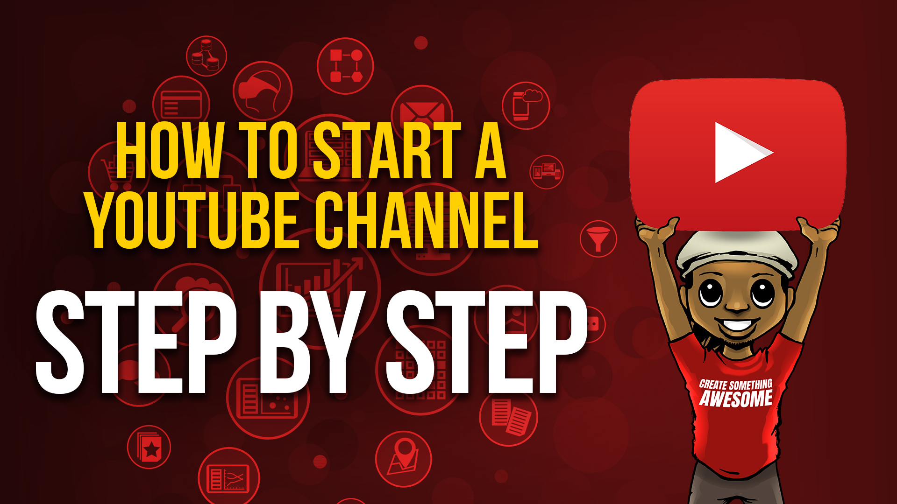

your videos channel
La description de l'application
Il s'agit d'une application de démonstration pour l'application de votre chaîne de vidéos sur Codecanyon, vous pouvez acheter ce modèle d'application ici: https://codecanyon.net/user/solodroid/portfolio?ref=solodroid. Votre chaîne de vidéos est un système de vidéos mobiles fonctionnant sous la plate-forme Android et utilisé pour votre propre application de chaîne de vidéos. Avec un panneau d'administration puissant et réactif, vous pouvez gérer un nombre illimité de catégories et télécharger des éléments vidéo ou obtenir une source vidéo à partir d'une URL externe ou de YouTube. En utilisant cette application, vous et votre argent en créant une application basée sur la vidéo et vous pouvez trouver de nombreuses fonctionnalités de cette application.
la démonstration de l'applicationvotre chaîne vidéo sur youtube!
Vous pouvez regarder et aimer des vidéos et vous abonner à des chaînes avec un compte Google. Mais sans chaîne YouTube, vous n’avez aucune présence publique sur YouTube. Même si vous avez un compte Google, vous devez créer une chaîne YouTube pour télécharger des vidéos, commenter ou créer des listes de lecture. Vous pouvez créer votre chaîne sur le site Web YouTube ou sur le site mobile YouTube.